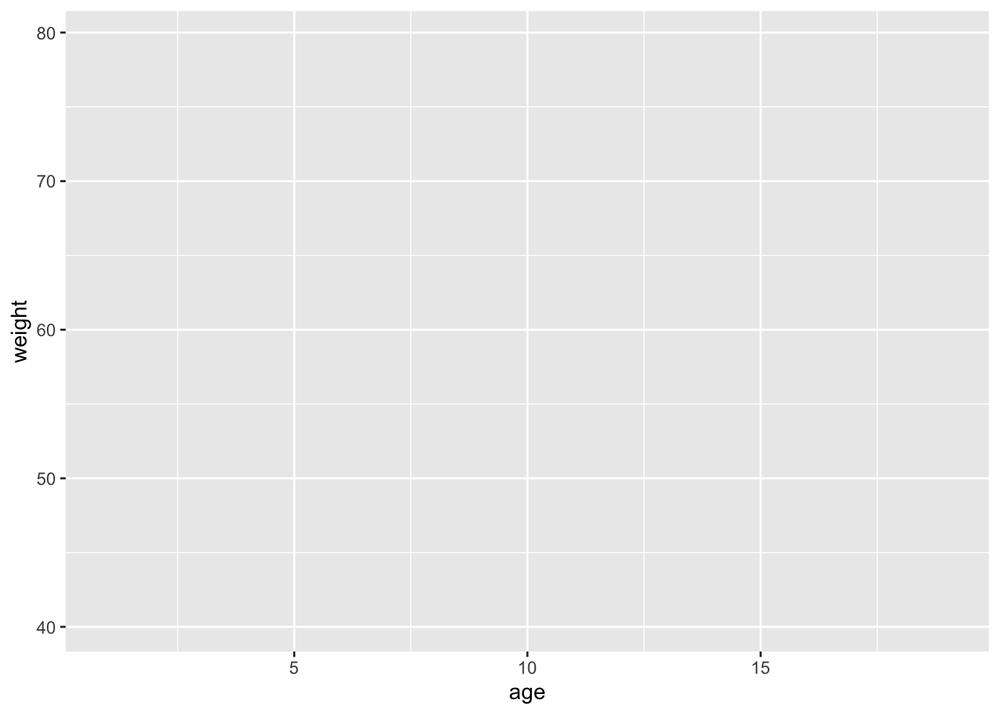
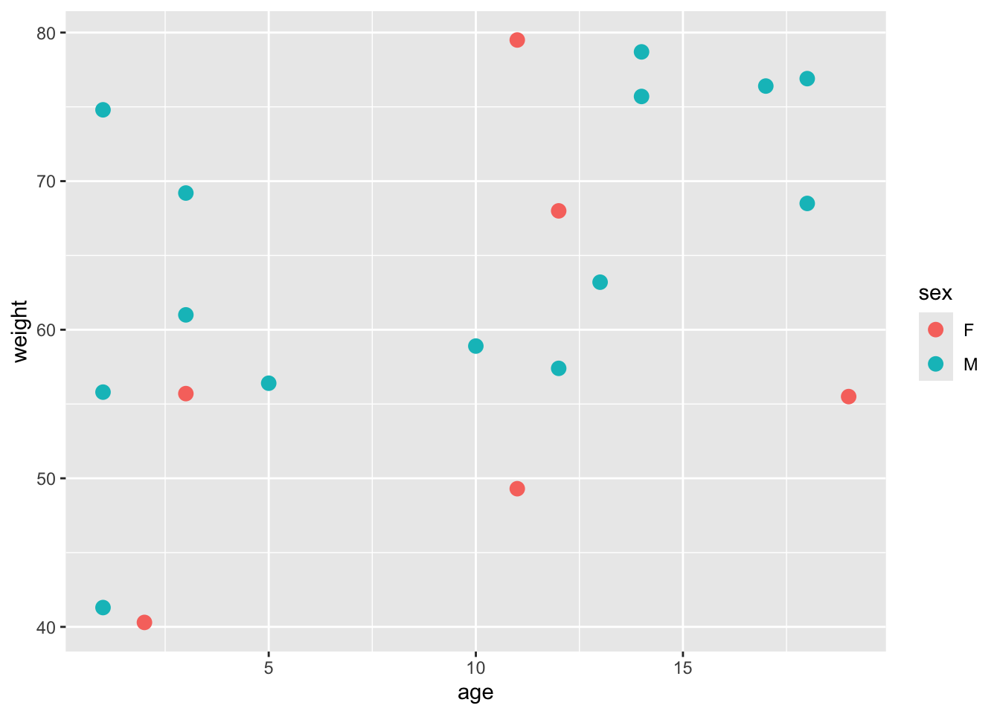
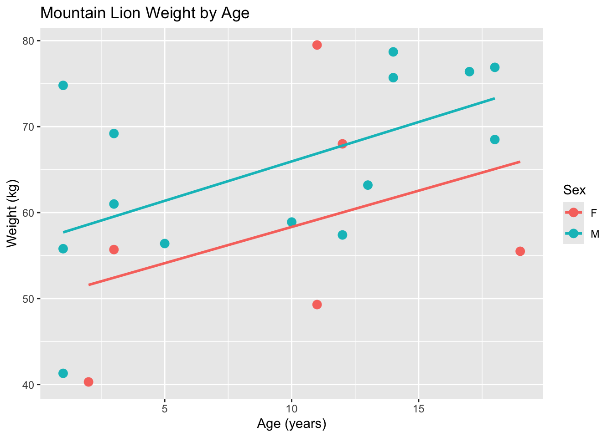
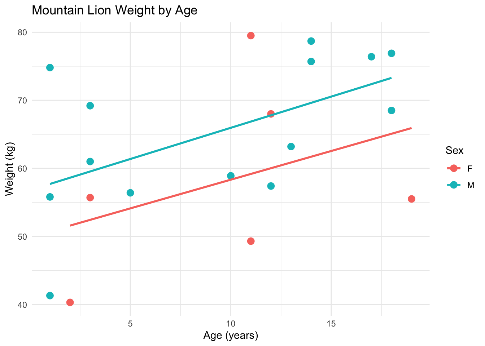
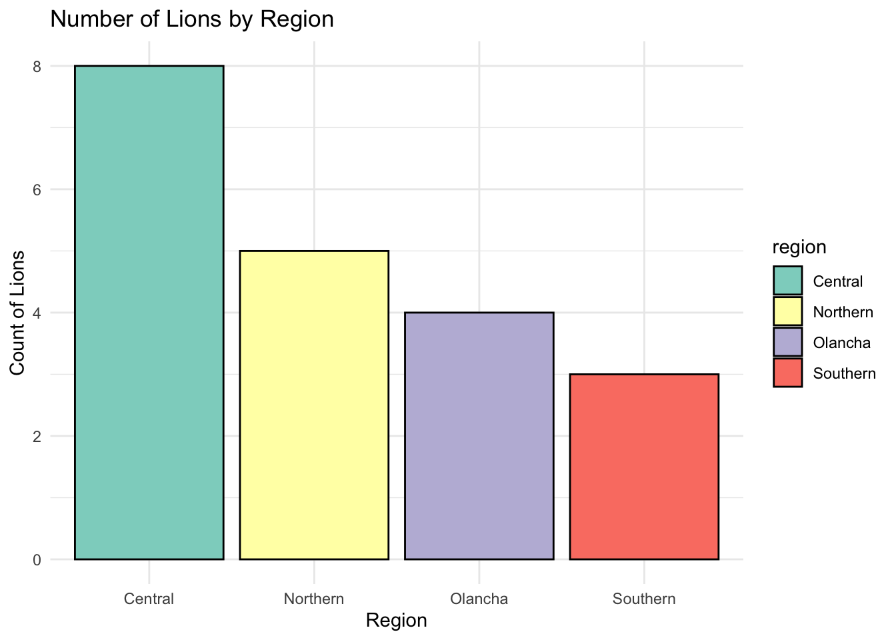

Chapter 6 Tidyverse
6.1 Why Tidyverse?
The tidyverse is a collection of R packages designed to simplify and streamline data science tasks. It promotes the concept of “tidy data,” where each column is a variable and each row is an observation, which simplifies analysis and visualization. Core tidyverse packages include ggplot2 for plotting, dplyr for data manipulation, and tidyr for reshaping data.
## ── Attaching core tidyverse packages ── tidyverse 2.0.0 ──
## ✔ dplyr 1.1.4 ✔ readr 2.1.5
## ✔ forcats 1.0.0 ✔ stringr 1.5.1
## ✔ ggplot2 3.5.1 ✔ tibble 3.2.1
## ✔ lubridate 1.9.3 ✔ tidyr 1.3.1
## ✔ purrr 1.0.2
## ── Conflicts ──────────────────── tidyverse_conflicts() ──
## ✖ dplyr::filter() masks stats::filter()
## ✖ dplyr::lag() masks stats::lag()
## ℹ Use the conflicted package (<http://conflicted.r-lib.org/>) to force all conflicts to become errorsNotice the Conflicts from loading the tidyverse package.
One of the key strengths of the tidyverse is its readable syntax, especially with the use of the pipe operator (%>%), which allows users to chain together multiple steps in a clear, logical order.
# example of using a piped operation
sheep <- filter(x = sheep, herds %in% c("Bx", "Cn")) %>%
mutate(Yr_Month = paste(Year, Month, sep = "_"))Note that I had to specify the object sheep in the filter() function, but not in the mutate() function. The %>% operator tells R to pass the sheep data frame through the pipeline, so it’s automatically used in the subsequent function.
Learning tidyverse provides efficient tools and workflows for data cleaning, exploration, and analysis. One of the most commonly used packages within the tidyverse is dplyr (data plier), which provides a set of powerful and intuitive functions for manipulating data frames. With dplyr, you can easily filter rows, select columns, create new variables, group data, and summarize it—all using clear, readable code.
Key Features:
- Consistent syntax across packages, making code easier to write and read.
- Tidy data structure, where each variable is a column and each observation is a row.
- Readable workflows using the pipe operator (%>%) to chain commands clearly.
- Integrated tools for the entire data science process—importing, cleaning, transforming, visualizing, and modeling data.
- User-friendly functions with intuitive names and logical default argument values.
- Open-source and widely supported, with ample online learning resources
- Provides tools for data manipulation, exploration, and visualization.
- Uses piping (%>%) to create readable, fluent workflows (through the magrittr package)
- The Tidyverse’s
Tibbledata structure offers a modern, consistent alternative to data frames, with improved subsetting behavior, better printing, and stricter data handling
6.2 Tibbles
The tidyverse uses a modern type of data frame structure called a Tibble that has a tbl class, a tbl_df class and a data.frame class.
# Create a tibble manually
my_tibble <- tibble(
name = c("S432", "S678", "S573"),
age = c(4, 2, 6)
)
class(my_tibble)## [1] "tbl_df" "tbl" "data.frame"6.2.1 Improved printing
Unlike data frames, tibbles only print the first 10 rows by default and only show the columns that fit on your screen, producing more readable output. The data types of each column are displayed underneath the column names, making it easier to understand your data quickly. It also prints an abbreviated description of the column type, and uses font styles and colors for highlighting.
In addition, numbers are displayed with three significant figures by default, and a trailing dot indicates the existence of a fractional component. You can control the default appearance with options.
## # A tibble: 3 × 2
## name age
## <chr> <dbl>
## 1 S432 4
## 2 S678 2
## 3 S573 66.2.2 Subsetting
Tibbles are stricter and more consistent than base data frames when it comes to subsetting:
When subsetting with tibbles using [, the result is always another tibble, even if you’re selecting a single column. This makes the behavior more predictable, especially in pipelines.
## # A tibble: 3 × 1
## name
## <chr>
## 1 S432
## 2 S678
## 3 S573## [1] "S432" "S678" "S573"In contrast, subsetting with data frames using [ may return a data frame or a vector, depending on the context:
my_df <- data.frame(
name = c("S432", "S678", "S573"),
age = c(4, 2, 6))
my_df[1] # Returns a data frame## name
## 1 S432
## 2 S678
## 3 S573## [1] "S432" "S678" "S573"## name age
## 1 S432 4Tibbles are also more strict with the $ operator: Tibbles do not allow partial matching. If the column name you use doesn’t match exactly, it will return NULL and may show a warning. As a result, tibbles can be safer than data frames, especially with data sets with similar column names.
## Warning: Unknown or uninitialised column: `na`.## NULLData frames allow partial matching, which can lead to unexpected results:
## [1] "S432" "S678" "S573"## [1] "S432" "S678" "S573"6.2.3 Recycling
When constructing a tibble, only values of length 1 are recycled. The first column with length different to one determines the number of rows in the tibble, conflicts lead to an error.
In R, recycling happens when you combine vectors of different lengths—shorter vectors are automatically repeated to match the longer ones. While this can be convenient, it can also lead to unintended results if you’re not careful.
In a data frame recycling often happens silently, even if the lengths don’t align exactly:
## name age
## 1 S432 4
## 2 S678 2
## 3 S573 4
## 4 S698 2Here, the shorter age vector age = c(4, 2) is silently recycled to fill the 4 rows of the data frame.
Tibbles are stricter about recycling:
- Tibbles only allow recycling if the shorter vector is length 1.
- If the lengths don’t match and can’t be safely recycled, tibbles will return an error—helping you catch mistakes early.
# This works — length 1 value recycled
my_tibble <- tibble(
name = c("S432", "S678", "S573", "S698"),
age = c(2))
# This fails — length 2 can't be recycled to length 4
my_tibble <- tibble(
name = c("S432", "S678", "S573", "S698"),
age = c(4, 2))## Error in `tibble()`:
## ! Tibble columns must have compatible sizes.
## • Size 4: Existing data.
## • Size 2: Column `age`.
## ℹ Only values of size one are recycled.6.2.4 Tibble vs. Data Frame — Key Differences
Below is a table summarizing the differences between data frames and tibbles. You can also see vignette("invariants") for a detailed comparison between tibbles and data frames.
| Feature | Base R Data Frame | Tibble (from tibble package) |
|---|---|---|
| Printing | Prints entire dataset, which can flood console | Prints first 10 rows and fits columns to screen width |
| Column types shown? | No | Yes — shows column types under names |
| Type conversion on import | Often converts strings to factors (read.csv) |
Does not convert strings to factors by default |
| Partial column name match | Allows it (df$na may match name) |
Disallows it — column name must match exactly |
Subsetting with [ |
Can return a vector or data frame depending on syntax | Always returns a tibble (more consistent) |
| Recycling of short vectors | Silent, may lead to subtle bugs | Gives a warning if lengths don’t match |
| Row names | Supports row names | Does not use row names |
| Integration | Basic support for base R functions | Seamless with tidyverse tools |
6.3 Tidyverse Functions
dplyr, a main package of the tidyverse, consists of five main functions:
filter(): Subset the data based on specific conditions. This is for selecting rows.
# create data frame object
snbs <- data.frame(AID = c("S488", "S500", "S468"),
Sex = c("M", "F", "F"),
Herd = c("Ca", "Gb", "Wh"),
RU = c("NRU", "NRU", "CRU"))
# filter to females
females <- filter(snbs, Sex == "F")
head(females, 1)## AID Sex Herd RU
## 1 S500 F Gb NRUselect(): Choose specific columns from the data. This is for selecting columns
# select AID and RU columns
snbs_s <- select(snbs, AID, RU)
# remove one column with negative indexing
snbs_s <- select(snbs, -Sex, -RU)
head(snbs_s, 1)## AID Herd
## 1 S488 Camutate(): Modify or create new variables in the data.
snbs_s <- mutate(snbs, AID_Sex = paste(AID, Sex, sep = "_")) %>%
select(AID, Sex, AID_Sex)
head(snbs_s, 1)## AID Sex AID_Sex
## 1 S488 M S488_Mgroup_by(): Group data based on one or more variables for grouped operations.
## # A tibble: 3 × 4
## # Groups: RU [2]
## AID Sex Herd RU
## <chr> <chr> <chr> <chr>
## 1 S488 M Ca NRU
## 2 S500 F Gb NRU
## 3 S468 F Wh CRUsummarize(): Generate summary statistics from the data. Common summary statistics include:n(),mean(),mode(),range(),median(),sd().
## # A tibble: 2 × 2
## RU n
## <chr> <int>
## 1 CRU 1
## 2 NRU 2arrange(): Sort the data in a specific order.
snbs_sorted <- arrange(snbs, Herd)
# Sorts character values in alphabetical order by default
snbs_sorted_desc <- arrange(snbs, desc(Herd))
# Sorts character values in descending alphabetical orderYou can perform many operations in one call using the pipe operator:
snbs_tidy <- filter(snbs, Sex == "F") %>%
mutate(AID_Sex = paste(AID, Sex, sep = "_")) %>%
select(-RU) %>%
group_by(Herd) %>%
summarize(n = n()) %>%
arrange(Herd)EXERCISE 1
- Recreate the following object:
elk_df <- data.frame(
elk_id = c("E001", "E002", "E003", "E004", "E005"),
weight = c(350, 410, 290, 500, 375),
herd = c("North", "South", "East", "West", "North"))
- Use
filter()to subset weights > 375 - Create a new data frame that only contains the elk_id and herd column
- Create a new data frame that is grouped by herd. Calculate the number of observations per herd. Arrange the final dataset in alphabetical order.
6.4 Tidyverse vs BaseR
There are many different ways to accomplish the same task in R (e.g. using tidyverse or baseR syntax). Whichever syntax you choose depends on what you’re more comfortable with. Personally, I like using a mix of both. Tidyverse code is intuitive, but for really large data sets, baseR works faster. It’s all about finding what works best for you and your data.
| Purpose | Tidyverse (dplyr) |
Base R Equivalent |
|---|---|---|
| Subset rows | filter() |
subset() or logical indexing: df[df$col == value, ] |
| Select columns | select() |
df[, c("col1", "col2")] |
| Create/modify columns | mutate() |
df$new_col <- ... |
| Group data | group_by() |
tapply(), aggregate(), or split() |
| Summarize data | summarize() (or summarise()) |
aggregate() or tapply() with mean(), sum(), etc. |
6.5 ggplot

Artwork by Allison Horst
ggplot is a powerful and flexible R package used for data visualization. It is part of the tidyverse and is built on the Grammar of Graphics—a layered approach to building plots that allows you to combine data, visual elements, and aesthetics step by step. You can customize nearly every part of a ggplot, including adding titles, axis labels, and legends; adjusting colors, shapes, and sizes; applying different themes; adding trend lines or annotations; and creating multi-panel layouts using faceting.
Key Features
- Layered plotting system: Build plots by adding layers (e.g., points, lines, bars).
- Aesthetic mapping: Easily map variables to visual properties like color, size, and shape.
- Customizable: Control themes, labels, scales, and more.
- Works seamlessly with tidy data and other tidyverse tools.
6.5.1 Components of ggplot
When using ggplot2 in R, your code is built in layers, with each part adding a new component to the plot. Here’s a breakdown of the key components you’ll commonly use:
- Data: The dataset you’re visualizing.
- Aesthetics (aes()): Defines how variables in the data are mapped to visual properties like position, color, or size.
- Geometries (geom_
()): Determine the type of plot (e.g. points, lines, bars, etc.)
Each ggplot() call begins with the data and aesthetic mappings, and layers like geom_
First we will create a fake lion dataset:
# Create fake lion data
lions <- data.frame(
id = paste0("Lion", 200:219),
age = sample(1:20, 20, replace = TRUE), # age in years
weight = round(rnorm(20, mean = 60, sd = 10), 1), # weight in kg
sex = sample(c("M", "F"), 20, replace = TRUE),
region = sample(c("Northern", "Southern", "Central", "Olancha"), 20, replace = TRUE)
)
head(lions, 3)## id age weight sex region
## 1 Lion200 18 53.8 F Southern
## 2 Lion201 14 51.1 F Northern
## 3 Lion202 11 48.3 M Northern- The main ggplot() function

- ggplot(data = lions): This is where we tell ggplot what data we’re using. In this case, it’s the lions data frame.
- aes(x = age, y = weight, color = sex): This part is called the aesthetic mapping (or aes for short). It tells ggplot which variables to plot:
- x = age: We’re plotting age on the x-axis.
- y = weight: We’re plotting weight on the y-axis.
- color = sex: We want to color the points by the sex variable. This way, male and female lions will have different colors.
- Adding Points with geom_point()
 * geom_point(): This part tells ggplot to plot the data as points (a scatter plot). * size = 3: This adjusts the size of the points on the plot to make them more visible.
- Adding a trendline and labels
ggplot(data = lions, aes(x = age, y = weight, color = sex)) +
# Add scatterplot
geom_point(size = 3) +
# Adding trend line
geom_smooth(method = "lm", se = FALSE, aes(color = sex), linetype = "solid") +
labs(
title = "Mountain Lion Weight by Age",
x = "Age (years)",
y = "Weight (kg)",
color = "Sex"
) ## `geom_smooth()` using formula = 'y ~ x'
- geom_smooth: creates a trendline for each sex
labs(): This function is used to add titles and labels to the plot.- title: Adds a title to the plot.
- x: Labels the x-axis (Age).
- y: Labels the y-axis (Weight).
- color: Adds a label for the color legend, which shows the different colors for male and female lions.
- Final Touches with
theme_minimal()
- theme_minimal(): This is a simple and clean theme for the plot. It removes unnecessary background grids and makes the plot look more visually appealing. There are many other different themes such as
theme_class,theme_dark, andtheme_light.
ggplot(data = lions, aes(x = age, y = weight, color = sex)) +
# Add scatterplot
geom_point(size = 3) +
# Adding trend line
geom_smooth(method = "lm", se = FALSE, aes(color = sex), linetype = "solid") +
labs(
title = "Mountain Lion Weight by Age",
x = "Age (years)",
y = "Weight (kg)",
color = "Sex"
) +
theme_minimal()## `geom_smooth()` using formula = 'y ~ x'
Here is an example of making a barplot that is colored by different region.
# Create the bar plot, colored by region
ggplot(data = lions, aes(x = region, fill = region)) +
geom_bar(color = "black") + # Bar border color
labs(
title = "Number of Lions by Region",
x = "Region",
y = "Count of Lions"
) +
theme_minimal() +
scale_fill_brewer(palette = "Set3") # Using a color palette for better visuals
6.5.2 Different plots in ggplot
| Plot Type | ggplot2 Function |
Description |
|---|---|---|
| Scatter Plot | geom_point() |
Shows relationship between two continuous variables |
| Line Plot | geom_line() |
Displays trends over time or ordered categories |
| Bar Chart (counts) | geom_bar() |
Plots the count of categories (x only) |
| Bar Chart (values) | geom_col() |
Plots values directly (requires both x and y) |
| Boxplot | geom_boxplot() |
Visualizes the distribution and spread by group |
| Histogram | geom_histogram() |
Shows distribution of a single continuous variable |
EXERCISE
- Create the following object:
# Create a fake data frame for bighorn sheep
bighorn_df <- data.frame(
ID = paste0("S", 500:530), # ID for each sheep
Age = sample(1:15, 31, replace = TRUE), # Random ages between 1 and 10
Weight = round(rnorm(31, mean = 75, sd = 15), 1), # Random weights with mean of 75 kg and sd of 15
Sex = sample(c("M", "F"), 31, replace = TRUE), # Random sexes (Male, Female)
Herd = sample(c("North", "South", "East", "West"), 31, replace = TRUE) # Random herd names
)- Create a histogram to visualize the weights of bighorn sheep.
- Set the bins to be blue.
- Add a black outline to the bins.
- Include a title as well as labels for the x and y axes.
- Apply a theme to enhance the plot’s appearance.
6.6 Tidyverse Analysis Example
Exercise – Using a data set in R called penguins_raw to perform a simple analysis
Explore the data set: * Look at the first 5 rows (head) * Look at the data structure (str) * How many samples? (nrow) * Get a list of the column names (names) * How many species of penguins (unique)
Question we are interested in: We want to understand how body mass varies by species and sex
6.6.1 Load libraries
First let’s load the required libraries.
## Warning: package 'palmerpenguins' was built under R version 4.4.16.6.2 Examine data frame
Let’s look at the first 10 rows of the penguins_raw data frame.
## # A tibble: 6 × 17
## studyName `Sample Number` Species Region Island Stage `Individual ID`
## <chr> <dbl> <chr> <chr> <chr> <chr> <chr>
## 1 PAL0708 1 Adelie Penguin … Anvers Torge… Adul… N1A1
## 2 PAL0708 2 Adelie Penguin … Anvers Torge… Adul… N1A2
## 3 PAL0708 3 Adelie Penguin … Anvers Torge… Adul… N2A1
## 4 PAL0708 4 Adelie Penguin … Anvers Torge… Adul… N2A2
## 5 PAL0708 5 Adelie Penguin … Anvers Torge… Adul… N3A1
## 6 PAL0708 6 Adelie Penguin … Anvers Torge… Adul… N3A2
## # ℹ 10 more variables: `Clutch Completion` <chr>, `Date Egg` <date>,
## # `Culmen Length (mm)` <dbl>, `Culmen Depth (mm)` <dbl>,
## # `Flipper Length (mm)` <dbl>, `Body Mass (g)` <dbl>, Sex <chr>,
## # `Delta 15 N (o/oo)` <dbl>, `Delta 13 C (o/oo)` <dbl>, Comments <chr>Let’s examine the structure of the penguins_raw data frame
## tibble [344 × 17] (S3: tbl_df/tbl/data.frame)
## $ studyName : chr [1:344] "PAL0708" "PAL0708" "PAL0708" "PAL0708" ...
## $ Sample Number : num [1:344] 1 2 3 4 5 6 7 8 9 10 ...
## $ Species : chr [1:344] "Adelie Penguin (Pygoscelis adeliae)" "Adelie Penguin (Pygoscelis adeliae)" "Adelie Penguin (Pygoscelis adeliae)" "Adelie Penguin (Pygoscelis adeliae)" ...
## $ Region : chr [1:344] "Anvers" "Anvers" "Anvers" "Anvers" ...
## $ Island : chr [1:344] "Torgersen" "Torgersen" "Torgersen" "Torgersen" ...
## $ Stage : chr [1:344] "Adult, 1 Egg Stage" "Adult, 1 Egg Stage" "Adult, 1 Egg Stage" "Adult, 1 Egg Stage" ...
## $ Individual ID : chr [1:344] "N1A1" "N1A2" "N2A1" "N2A2" ...
## $ Clutch Completion : chr [1:344] "Yes" "Yes" "Yes" "Yes" ...
## $ Date Egg : Date[1:344], format: "2007-11-11" "2007-11-11" ...
## $ Culmen Length (mm) : num [1:344] 39.1 39.5 40.3 NA 36.7 39.3 38.9 39.2 34.1 42 ...
## $ Culmen Depth (mm) : num [1:344] 18.7 17.4 18 NA 19.3 20.6 17.8 19.6 18.1 20.2 ...
## $ Flipper Length (mm): num [1:344] 181 186 195 NA 193 190 181 195 193 190 ...
## $ Body Mass (g) : num [1:344] 3750 3800 3250 NA 3450 ...
## $ Sex : chr [1:344] "MALE" "FEMALE" "FEMALE" NA ...
## $ Delta 15 N (o/oo) : num [1:344] NA 8.95 8.37 NA 8.77 ...
## $ Delta 13 C (o/oo) : num [1:344] NA -24.7 -25.3 NA -25.3 ...
## $ Comments : chr [1:344] "Not enough blood for isotopes." NA NA "Adult not sampled." ...
## - attr(*, "spec")=
## .. cols(
## .. studyName = col_character(),
## .. `Sample Number` = col_double(),
## .. Species = col_character(),
## .. Region = col_character(),
## .. Island = col_character(),
## .. Stage = col_character(),
## .. `Individual ID` = col_character(),
## .. `Clutch Completion` = col_character(),
## .. `Date Egg` = col_date(format = ""),
## .. `Culmen Length (mm)` = col_double(),
## .. `Culmen Depth (mm)` = col_double(),
## .. `Flipper Length (mm)` = col_double(),
## .. `Body Mass (g)` = col_double(),
## .. Sex = col_character(),
## .. `Delta 15 N (o/oo)` = col_double(),
## .. `Delta 13 C (o/oo)` = col_double(),
## .. Comments = col_character()
## .. )Let’s look at how many rows are in the penguins_raw data frame
## [1] 344Let’s look at the unique species in the Species column of the penguins_raw data frame using the unique() function.
## [1] "Adelie Penguin (Pygoscelis adeliae)"
## [2] "Gentoo penguin (Pygoscelis papua)"
## [3] "Chinstrap penguin (Pygoscelis antarctica)"Now let’s take a look at the column names in the penguins_raw dataset.
## c("studyName", "Sample Number", "Species", "Region", "Island",
## "Stage", "Individual ID", "Clutch Completion", "Date Egg", "Culmen Length (mm)",
## "Culmen Depth (mm)", "Flipper Length (mm)", "Body Mass (g)",
## "Sex", "Delta 15 N (o/oo)", "Delta 13 C (o/oo)", "Comments")In the previous code dput(names(penguins_raw)), R follows its usual order of operations by evaluating the innermost function first. So:
names(penguins_raw)retrieves the column names of the dataset as a character vector.dput()then takes that result and prints it in a format that can be copied and reused as R code.
The dput() function (short for “dump put”) converts an object into valid R code.
6.6.3 Manipulate data frame
Subsample the penguins_raw to create a new data set called p_measure.
First we will reassign the penguins_raw dataset to a new object called p_measure
Let’s select the 3rd, 5th, and 9th through 14th columns. Below are examples using both Base R and tidyverse approaches.
# base R method
p_measure<-p_measure[,c(3,5,9:14)]
# tidyverse method
# p_measure<-select(p_measure, Species, Island, "Date Egg", "Culmen Length (mm)",
# "Culmen Depth (mm)", "Flipper Length (mm)", "Body Mass (g)", Sex)- We remove the following columns (studyName, Sample Number, Region, Stage, Clutch Completion, Delta 15 N (o/oo), Delta 13 C (o/oo) and Comments
- We keep the following columns (Species, Island, Date Egg Culmen Length (mm), Culmen Depth (mm), Flipper Length(mm), Body Mass (g), Sex)
Now let’s rename the column names to eliminate spaces. Below are examples using the baseR and tidyverse methods.
# baseR method
names(p_measure)<-c("species","island", "date", "bill_len", "bill_dep", "flipper_len",
"body_mass", "sex")
# tidyverse method
# p_measure<-rename(p_measure, species = Species, island = Island, date = "Date Egg",
# bill_len = "Culmen Length (mm)", bill_dep = "Culmen Depth (mm)",
# flipper_len = "Flipper Length (mm)", body_mass = "Body Mass (g)",
# sex = Sex)Now we’ll use the pipe operator (%>%) to add a column called year using mutate (year=year(date)). Themutate() function is used to add or modify columns in a data frame, and the year() function extracts the year component from a date. We then remove the date column using select().
p_measure<-p_measure%>%
mutate(year=year(date))%>%
dplyr::select(-3)%>%
dplyr::filter(!is.na(body_mass)& !is.na(sex))Let’s look at our new data frame using head()
## # A tibble: 6 × 8
## species island bill_len bill_dep flipper_len body_mass sex year
## <chr> <chr> <dbl> <dbl> <dbl> <dbl> <chr> <dbl>
## 1 Adelie Penguin (Py… Torge… 39.1 18.7 181 3750 MALE 2007
## 2 Adelie Penguin (Py… Torge… 39.5 17.4 186 3800 FEMA… 2007
## 3 Adelie Penguin (Py… Torge… 40.3 18 195 3250 FEMA… 2007
## 4 Adelie Penguin (Py… Torge… 36.7 19.3 193 3450 FEMA… 2007
## 5 Adelie Penguin (Py… Torge… 39.3 20.6 190 3650 MALE 2007
## 6 Adelie Penguin (Py… Torge… 38.9 17.8 181 3625 FEMA… 20076.6.4 Analysis
Now let’s create our final analysis data frame object called output_analysis. We will use the data set called penguins (it’s a cleaner version of the data set we just created from penguins_raw). The steps to perform include:
- Remove rows with
NAvalues in thebody_massandsexcolumns. - Group the data by species and sex.
- Summarize each group by calculating:
- Number of samples (n)
- Mean body mass (mean_bm)
- Median body mass (median_bm)
- Standard deviation of body mass (SD_bm)
- Add confidence intervals
- LCL: Lower confidence limit (mean - 2 × SD)
- UCL: Upper confidence limit (mean + 2 × SD)
output_analysis<-penguins%>%
# Filter out rows where body_mass is NA (filter using !is.na)
dplyr::filter(!is.na(body_mass_g)& !is.na(sex))%>%
# Group data by species and sex (group_by)
group_by(species,sex)%>%
# Summarize data (n, mean, median, sd)
summarize(n=n(), # number of samples (n)
mean_bm=mean(body_mass_g), # calculate mean body mass
median_bm=median(body_mass_g), # calculate median body mass
SD_bm=sd(body_mass_g))%>% # caluclate the standard deviation of body mass
# Add confidence intervals using mutate
mutate(LCL=mean_bm-2*SD_bm, # calculate the lower confidence interval level
UCL=mean_bm+2*SD_bm) # calculate the upper confidence interval level## `summarise()` has grouped output by 'species'. You can
## override using the `.groups` argument.6.6.5 Plot results using ggplot2
Finally, we will generate a ggplot from our analysis using the data frame above.
ggplot(data = output_analysis, aes(x = paste0(sex,species), y = mean_bm, ymin=LCL, ymax=UCL, color = species)) +
geom_point(size = 3) + # Add points
geom_errorbar(width = 0.4) + # add error bars
# angle text on x axis for readability
theme(axis.text.x = element_text(angle = 45, hjust = 1, vjust = 1)) +
# Hide x an y axis tick mark labels
theme(axis.text.x = element_blank()) +
# add annotations to graph
annotate("text", x = 2.25 , y = 5600, label = "Female")+
annotate("segment", x = 0.5, xend = 3.4, y = 5500, colour = "black")+
annotate("text", x = 5.25 , y = 3100, label = "Male")+
annotate("segment", x = 3.6, xend = 6.4, y = 3000, colour = "black") +
# label axes and graph
labs(
title = "Penguin Weight by Species & Sex",
x = "",
y = "Mass (g)",
color = "Species"
)